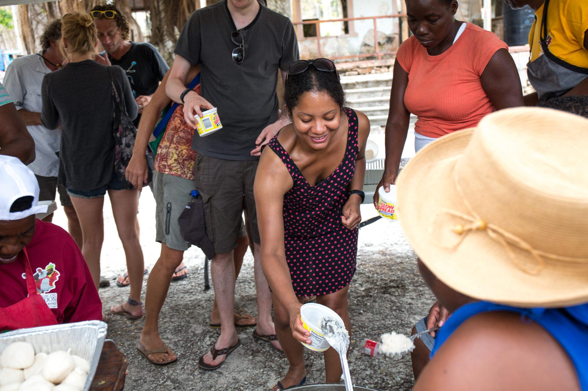

Our Heritage
Learn about Saraka's history and cultural importance in Grenada.
Discover the History
Celebrating Grenadian Culture Through Food
Tradition • Community • Flavour
Discover a Grenadian cultural tradition that brings people together through food, sharing and community. Explore our Saraka Cooking Competition and learn how to take part.
Explore the CompetitionSaraka is a traditional Grenadian custom associated with community, sharing and cultural heritage. Food plays an important role in bringing people together and keeping traditions alive.
This website provides information about Saraka, the cooking competition, participation requirements and the rules contestants should follow.

Learn about Saraka's history and cultural importance in Grenada.
Discover the History
Find out how teams can participate in the cooking competition.
Learn How to EnterUnderstand the guidelines for safe and fair participation.
Read the Rules